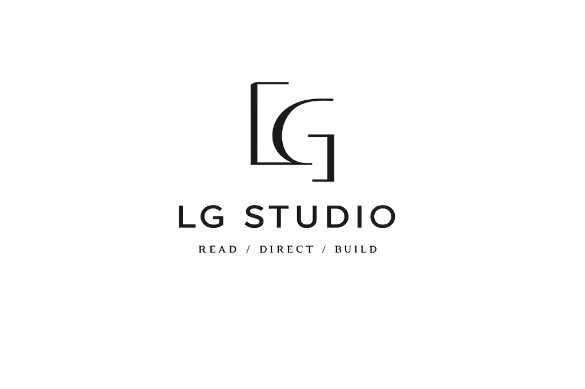
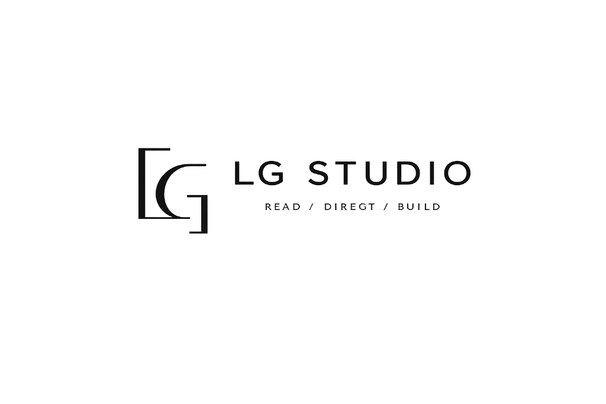
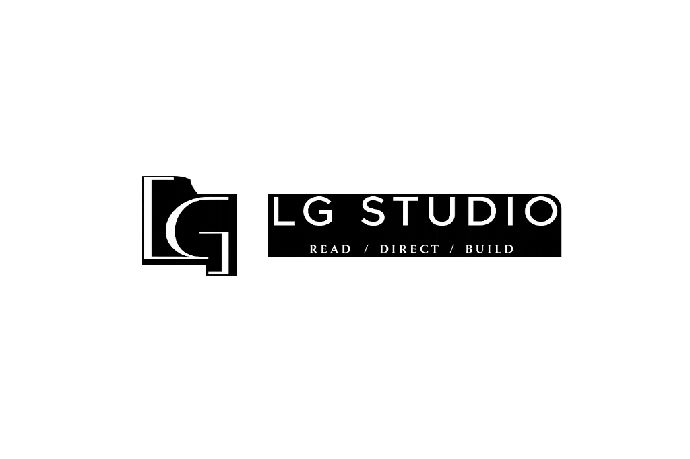

Design System
The working reference. Every token, every component, every rule, as it actually gets used. Start with the expression modes below: they determine which rules apply and which are allowed to vary. Pair this with the long-form Brand Guide when arguing the why.
Expression Modes
01 · ArchitectureOne brand. One shared core. Three modes. The objective is not visual uniformity across LG Studio, StrategyIQ and Insights. The objective is recognizable kinship: one underlying system capable of changing mode according to what the experience is doing.
Editorial
The authored practice: positioning, methodology, creative reads, case studies, engagement, presentations, the studio site.
Dominant surface · PaperInstrument
Diagnostic product experiences: structured reads, readouts, workflows, signals, decisions, operational interfaces.
Dominant surface · InkPublishing
Essays, observations, strategic writing, frameworks, journals, long-form thought, editorial artifacts.
Dominant surface · PaperA legacy implementation, not a mode of the brand. It hosts the ecosystem and keeps its own established palette and type. It is not promoted to a fourth expression mode and it is not retrofitted.
What is shared, what is allowed to vary
| 01 · Practice | 02 · StrategyIQ | 03 · Insights | |
|---|---|---|---|
| Purpose | Authored practice, methodology, selected work | Diagnostic instrument, readouts, operational UI | Publishing, essays, frameworks, journals |
| Dominant surface | Paper, with deliberate Ink sections | Ink-led, substantially and by design | Paper, with dark editorial interruptions |
| Density | Spacious. --sp-6 / --sp-7 section breaks. |
Information-dense where the read requires it. --sp-2 / --sp-3. |
Reading-led. Measure held at --measure-read. |
| Typography | --font-editorial leads |
Canonical product type holds. --font-structural and --font-system lead. |
--font-editorial and --font-body lead. Existing faces may remain. |
| Imagery | Atmospheric, architectural, image-aware | Rare. Diagrams and data displace photography. | Editorial and supporting. Never decorative. |
| Components | Editorial cards, hairline rules, near-square corners | Existing product components remain canonical | Article furniture, annotations, structured metadata |
| Always shared | Logo system · semantic color roles · spacing logic · hairline behavior · interaction principles · voice · CTA philosophy · accessibility expectations | ||
| Allowed to vary | Page composition · dominant surface · density · typographic implementation · component interiors · image weight | ||
StrategyIQ is an instrument, not a second brand
StrategyIQ has an existing canonical product system, and it remains valid. This document does not prescribe a retrofit and does not overwrite product typography or product UI rules. StrategyIQ participates through shared principles and carefully selected shared tokens. It should feel related to LG Studio, not dressed like the LG Studio homepage.
Insights aligns forward, not backward
Insights should gain greater kinship with the Practice over time. Existing Insights pages are not obsolete and do not require redesign. New editorial work uses the shared system. When an older page is substantially revisited for a legitimate reason, it may migrate opportunistically.
Migration Principle
02 · ArchitectureThere is no mandatory global retrofit. Existing work is not automatically obsolete. The system improves at the seams, where consistency is felt most and costs least.
Unify the edges first.
Preserve existing interiors until they need to change.
Identity and logo usage. Shell behaviors. Navigation. Footer. Semantic tokens. CTA behaviors. Spacing logic. Interaction standards.
Existing product and page interiors stay in their established visual language until they are naturally revisited. A working interior is not a defect.
Anything built from here forward uses the shared core and the correct mode. Migration happens opportunistically, never as a scheduled sweep.
This applies to the legacy host surface as well. The existing luis-gilberto.com implementation keeps its established visual language. When one of its surfaces is substantially redesigned anyway, it migrates at that moment. That is the only trigger.
Color & Surfaces
03 · FoundationsFour values carry the identity. The system separates raw palette values from semantic roles: the raw value is the vocabulary, the role is the job. New work references the role, so a mode can change what a surface is made of without changing what it means. Click any swatch to copy the hex.
Raw palette
Surfaces
Paper and Ink are compositional tools inside one identity, not light mode and dark mode. Neither is primary. Practice and Insights are generally Paper-led with deliberate Ink sections. StrategyIQ may remain substantially Ink-led. Apply data-surface="ink" to any section that should become Ink-led: the semantic tokens re-point, the raw palette does not.
Warm, editorial, reading-led. The default ground for Practice and Insights. Long-form lives here.
Immersive, diagnostic, high-focus. The default ground for StrategyIQ, and a deliberate anchor inside Practice and Insights.
Semantic accent roles
Neither accent becomes decorative confetti. If a view has more than one Terracotta moment, one of them is not the most important action. If Teal appears without structure underneath it, it is decoration wearing the costume of a signal.
Usage tokens
Typography
04 · FoundationsFour semantic roles, not four brands. A role describes the job the type is doing, not the territory a typeface owns. This is what lets one system change mode without forking its identity. Practice mode maps the roles to Fraunces, Inter, Big Shoulders Display and JetBrains Mono. Another mode may map a role to a different family and still be recognizably LG Studio.
| Role | Practice mapping | The job it does |
|---|---|---|
| --font-editorial | Fraunces | Editorial thought. Large propositions. Essay and display headlines. Names. Authored argument. |
| --font-body | Inter | Universal readable layer. Body copy. Interface. Navigation. Buttons where readability beats editorial character. Forms. |
| --font-structural | Big Shoulders Display | Structural voice. Section labels. Taxonomy. Indexes. Chapter identifiers. Wayfinding. Selective, with tracking and restraint. |
| --font-system | JetBrains Mono | System and technical metadata only. Coordinates. Token names. Diagnostic metadata. Code. Not a fourth headline family. |
Typography compatibility
Existing pages may retain their current editorial typeface until they are substantially revisited.
Fraunces is the preferred editorial voice for new LG Studio Practice work. It is not applied backwards. There is no historical typography migration. StrategyIQ keeps its canonical product typography. Legacy aliases --font-display and --font-label are retained in tokens.css and resolve to --font-editorial and --font-structural, so existing selectors keep working without a rewrite.
Editorial role · Frauncesvar(--font-editorial)
Body role · Intervar(--font-body)
Structural role · Big Shoulders Displayvar(--font-structural)
System role · JetBrains Monovar(--font-system)
Spacing
05 · FoundationsModular scale. Micro for text rhythm, component for interior padding, section for content breaks, chapter for thematic shifts.
Radii & Shadows
06 · FoundationsCorners stay near-square. Shadows are rare. This is a printed system that happens to run in a browser.
Logo System
07 · MarksEvery variant has a Paper and an Ink surface partner. Never redraw, never approximate, never regenerate. READ / DIRECT / BUILD is a signature of the practice, not a mandatory logo tagline — the monogram and the wordmark are each allowed to stand entirely on their own.
| Tier | Variants | Where it belongs |
|---|---|---|
| Primary | Horizontal lockup · monogram + wordmark | Default identity. Site headers, covers, credits, decks, documents. |
| Secondary | Wordmark only · monogram only · stacked lockup | Where space, hierarchy or repetition make the full lockup redundant. |
| Environmental | Reversed versions for Ink and other dark surfaces | Ink-led sections, StrategyIQ product surfaces, film credits, cover pages. |
| Extension | Partnership and co-brand lockup templates | An extension of the identity, never a primary identity variant. |

01A · Full Lockup
02A · Horizontal
02B · Horizontal Rev. 04A · Monogram04B · Monogram Rev.
04A · Monogram04B · Monogram Rev.Partnership Lockups
08 · MarksAn extension of the LG Studio identity, not a primary identity variant. Both marks hold their own weight, separated by a thin vertical rule. Three formats: pick the one that matches the hierarchy of the moment.
×
PARTNER
Buttons
09 · ComponentsPrimary — Ink
.btnThe default CTA. Ink fill, ivory label, uppercase Inter at 500. Readability leads over editorial character here. Hover inverts to hairline outline. Reserve for the single most important action on a page.
<button class="btn">Start a read</button>
Secondary — Outline
.btn.secondaryInk outline, transparent fill. Used alongside primary or when the context is already dark.
<button class="btn secondary">Read more</button>
Ghost — Underlined
.btn.ghostEditorial link-style CTA. A single hairline underline. Use inside long-form content or card footers.
<button class="btn ghost">View the case study</button>
Accent — Terracotta
.btn.accentReserved for the highest-priority moment. Never more than one per view. Never used as a decorative flourish.
<button class="btn accent">Get in touch</button>
Inputs
10 · ComponentsEditorial Underline
.fieldNo boxes. A hairline underline is the input. Inter label above, uppercase and tracked. Terracotta on focus. Feels like filling out a form on nice paper.
<div class="field"> <label>Your name</label> <input type="text"> </div>
Chips & Labels
11 · ComponentsCategory Chip
.chipA rectangular label, never a pill. Structural role, uppercase, tracked. Ink outline by default. Filled for state; teal or terracotta for category emphasis.
<span class="chip">Strategy</span> <span class="chip filled">Editorial</span> <span class="chip accent">In progress</span>
Cards
12 · ComponentsEditorial Card
.card-docA card is a rectangle with a hairline border. Never a raised, shadowed, or gradient-filled surface. Eyebrow → serif headline → body → ghost CTA. That order.
A brand that stands apart
Identity and expression system designed to be durable across every channel — with rules that actually get used.
Read the situation
A diagnostic read of the market, category, and audience shaping the challenge — before any output is committed to.
Navigation
13 · ComponentsEditorial Masthead
.nav-docHairline-bordered strip. Monogram left, Inter nav right. Never a hamburger unless the viewport demands it.
- Practice
- Case Studies
- Journal
- Contact
Applications
14 · In PracticeThree specimens, one system. These prove the system can change mode. Read them together: the kinship should be obvious without any two of them looking alike. What travels is the hairline rules, the near-square corners, the spacing rhythm, the semantic accent roles and the restraint. What changes is the dominant surface, the density, which typographic role leads, and how much room the image gets.
Good marketing isn’t decoration. It’s architecture.
Creative Director
LG Studio
Editorial composition. Editorial role leads. Paper ground with a deliberate Ink anchor. One Terracotta action per view. This is the mode that can use the new visual language most strongly.
Pattern Readout
Eight structural patterns evaluated against the intake. The system maps the pattern. The Second Read interprets what it means.
The stall isn’t a capacity problem. It’s a decision that never got made.
Name the owner of the blocked decision. Set a date.
Compatibility specimen only. This is not a redesign of the StrategyIQ product and does not replace its canonical product system. It reads as family through shared hairlines, spacing rhythm, structural label discipline and semantic accent roles: Teal carries what the system found, Terracotta carries the human read. It is allowed to differ in dominant surface, density, leading typographic role and the absence of photography. It is an instrument, and it looks like one.
The brief is rarely the problem.
Most engagements arrive with a request attached: a campaign, a site, a deck, a rebrand. The request is real, and it is almost never the thing that needs solving. Underneath it sits a decision someone has been avoiding, and the artifact is what avoidance looks like when it has a budget.
Structured metadata in the margin, editorial hierarchy in the body, measure held at --measure-read. This shows how Insights gains family resemblance without an immediate rebuild: the shell, navigation, footer, semantic tokens and CTA behavior unify first, and article interiors follow when they are next opened for a legitimate reason.